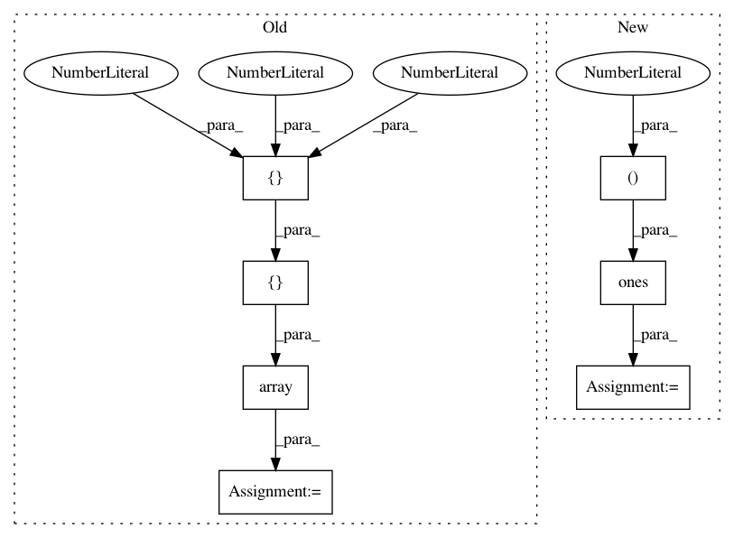

bf50aed084ac14e44a5e7b146e263b3e0e8516cc,mahotas/tas.py,,,#,28
Before Change
__all__ = ["pftas", "tas"]
_M = np.array([
[1, 1, 1],
[1, 10, 1],
[1, 1, 1]
])
_bins = np.arange(11)
def _tas(img, thresh, margin):
def _ctas(img):
After Change
_M2[1, 1] = 10
_bins2 = np.arange(11)
_M3 = np.ones((3, 3, 3))
_M3[1,1,1] = _M3.sum() + 1
_bins3 = np.arange(28)
def _tas(img, thresh, margin):
In pattern: SUPERPATTERN
Frequency: 3
Non-data size: 7
Instances
Project Name: luispedro/mahotas
Commit Name: bf50aed084ac14e44a5e7b146e263b3e0e8516cc
Time: 2010-11-11
Author: lpc@cmu.edu
File Name: mahotas/tas.py
Class Name:
Method Name:
Project Name: broadinstitute/keras-rcnn
Commit Name: 58331e77da44f727f96f71eedf6b7f467e3a8efa
Time: 2018-04-11
Author: allen.goodman@icloud.com
File Name: keras_rcnn/preprocessing/_object_detection.py
Class Name: DictionaryIterator
Method Name: _get_batches_of_transformed_samples
Project Name: senarvi/theanolm
Commit Name: 8fbbf6dde098fbfe176ed2175fc09a5f5b6fb7ed
Time: 2017-10-26
Author: seppo.git@marjaniemi.com
File Name: tests/theanolm/basiclayer_test.py
Class Name: TestBasicLayer
Method Name: test_init_bias